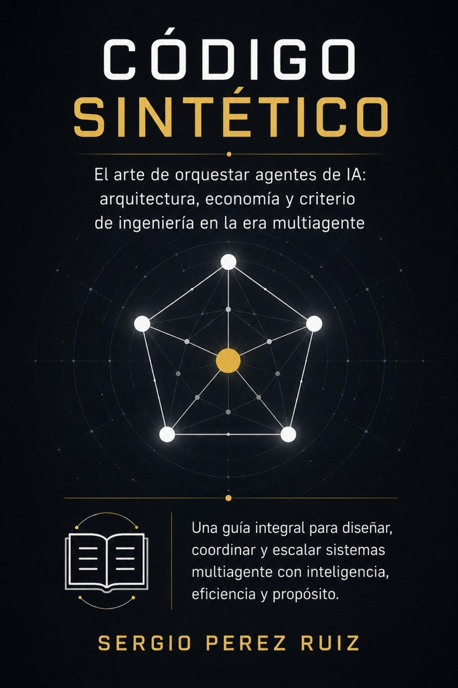

PILAR 01
Especificación Formal (SPEC.md)
Definición inequívoca de contratos de API, tipos estrictos, invariantes del dominio y criterios de aceptación en formato markdown estructurado (Gherkin/Checklist).
SpecSolid es un laboratorio de ingeniería especializado en Spec-Driven Development (SDD) — la metodología que convierte la inteligencia artificial en un multiplicador predecible, gobernable y sin deuda técnica descontrolada.
Spec-Driven Development es la respuesta técnica a la fragilidad del 'Vibe Coding'. Especifica primero el dominio y los contratos de datos, orquesta agentes de IA con contexto cerrado, y verifica cada entrega contra pruebas automatizadas y Architecture Decision Records (ADRs). Aquí encuentras el currículo abierto de DevOps de cero a senior, gestión con Scrum Board SDD, el marco de SDD Teoría, las extensiones Alpaquitay AI y Manan kanchu AI, y el libro Código Sintético.
Cuando un modelo de lenguaje programa sin especificación previa, asume supuestos invisibles, degrada la cohesión del sistema y genera 'architecture drift'. El SDD resuelve el problema de raíz delimitando el espacio de soluciones antes de la primera llamada a la API del LLM.
Definición inequívoca de contratos de API, tipos estrictos, invariantes del dominio y criterios de aceptación en formato markdown estructurado (Gherkin/Checklist).
Agentes especializados evalúan la SPEC antes de generar una sola línea de código: análisis de superficie de ataque, compatibilidad de dominio y accesibilidad UX.
Al tener contexto completo y contratos cerrados, el agente de IA produce código completo con tests unitarios en un solo ciclo, ahorrando hasta un 90% en consumo de tokens.
Cada cambio relevante viaja con su Architecture Decision Record (ADR) versionado junto al Pull Request. El equipo preserva el razonamiento y la historia técnica viva.
Compara cómo impacta cada paradigma en la velocidad real, la seguridad del código y el mantenimiento en producción a mediano y largo plazo.
| Criterio de Evaluación | Vibe Coding (Improvisado) | Agile Tradicional | Spec-Driven Dev (SpecSolid) |
|---|---|---|---|
| Predictibilidad del código | ✗ Muy Baja (Alucinaciones) | ~ Media (Manual) | ✓ Máxima (Contratos cerrados) |
| Tasa de vulnerabilidades | ✗ 45%+ sin validación | ~ Dependiente del dev | ✓ Mínima (Security lint pre-gen) |
| Deuda técnica a 6 meses | ✗ Crítica / Inmanejable | ~ Media controlada | ✓ Mínima (ADRs trazables) |
| Consumo de tokens de IA | ✗ Desperdicio (10+ reintentos) | ~ No aplica / Manual | ✓ Eficiente (1 sola pasada) |
| Gobernanza y Cumplimiento | ✗ Nula trazabilidad | ~ Documentación dispersa | ✓ Nativa (ISO 27001 / BIAN) |
| Tiempo a producción estable | ✗ Rápido en demo, lento en prod | ~ Lento (Sprints largos) | ✓ Ágil y resiliente en prod |
Cada herramienta resuelve una fase del ciclo de vida del software con IA: planificación, codificación asistida en VS Code, seguridad perimetral, formación continua y marco teórico.
Tablero Kanban de alto rendimiento construido sobre principios Spec-Driven. Gestiona sprints, velocidad y deuda técnica con exportación nativa a SPEC.md.
Asistente de ingeniería para VS Code. Co-piloto que entiende tu SPEC activa, lee el historial de Git y genera código con Claude, OpenAI, Ollama o LM Studio.
Extensión VS Code para detectar código generado por IA, vulnerabilidades OWASP, código malicioso y scripts de terminal destructivos antes de commitear.
Currículo completo de DevOps: de cero a senior. 12 secciones y 41+ guías con comandos reales, scripts de automatización y marcos ISO 27001, TOGAF, BIAN, PCI-DSS.
Framework teórico para arquitectos senior. Incluye flujo de 7 pasos, anatomía formal de SPEC, catálogo de modelos IA, simulador de costos y gestión de riesgos.
21 capítulos sobre arquitectura, economía y criterio de ingeniería para diseñar, orquestar y escalar sistemas multiagente en producción, por Sergio Perez Ruiz.
Mira cómo una SPEC precisa elimina la ambigüedad y permite que la IA produzca código con contratos estrictos y tests automáticos.
# SPEC: Servicio de Autenticación MFA (Sprint 14)
## 1. Contexto & Dominio
- Habilitar autenticación de doble factor TOTP (RFC 6238).
- Capacidad de concurrencia: 50k usuarios concurrentes.
## 2. Contratos de API Estrictos
POST /api/v1/auth/mfa/init
Request: { userId: UUID }
Response: { challengeId: UUID, qrSecret: string, expiresAt: ISO8601 }
POST /api/v1/auth/mfa/verify
Request: { challengeId: UUID, token: string (6 digits) }
Response: { authToken: JWT } | 401 Unauthorized
## 3. Criterios de Aceptación (Verificables)
- [x] Rate limiting: Máximo 3 intentos por minuto antes de bloqueo temporal.
- [x] Red Team: Cero bypass de challengeId sin secreto válido.
- [x] Cobertura de pruebas unitarias y de integración ≥ 95%.
- [x] ADR-0014 registrado y versionado con el commit.// mfa.service.ts — Generado con contexto SPEC completo
import { TOTP, ChallengeStore, RateLimiter } from '@specsolid/core';
export class MFAService {
constructor(
private readonly challenges: ChallengeStore,
private readonly limiter: RateLimiter
) {}
async verify(challengeId: string, token: string): Promise<AuthResult> {
const isAllowed = await this.limiter.check(challengeId, 3, '1m');
if (!isAllowed) throw new RateLimitException('Demasiados intentos');
const challenge = await this.challenges.find(challengeId);
if (!challenge || challenge.isExpired()) {
throw new InvalidChallengeException();
}
const isValid = TOTP.verify({ secret: challenge.secret, token });
if (!isValid) return { success: false, code: 401 };
await this.challenges.consume(challengeId);
return { success: true, authToken: this.issueToken(challenge.userId) };
}
}
✓ PASS: mfa.service.spec.ts (14 tests passed, 0 failed, 96.4% coverage)12 secciones. Más de 41 guías prácticas y exhaustivas. Cada comando probado en entornos reales de producción. Desde los fundamentos de Linux, contenedores y Kubernetes hasta cumplimiento normativo con ISO 27001, BIAN y PCI-DSS.
21 capítulos sobre arquitectura, economía de tokens y criterio de ingeniería para diseñar, gobernar y escalar sistemas multiagente en producción. Escrito por Sergio Perez Ruiz, con patrones de implementación de referencia verificados capítulo a capítulo.

Respuestas directas a las dudas más habituales sobre la implementación de Spec-Driven Development en equipos y proyectos reales.
Spec-Driven Development (SDD) es una metodología sistemática de ingeniería de software donde se define una especificación formal y ejecutable (contratos de API, tipos de datos, invariantes y criterios de aceptación) antes de que la IA genere el código.
En contraste, el Vibe Coding consiste en solicitarle a un LLM código mediante prompts interactivos e imprecisos. Aunque parece veloz en prototipos, genera 'architecture drift', código imposible de mantener y una deuda técnica asfixiante. El SDD garantiza predictibilidad, código testeable en una sola pasada y registro en ADRs (Architecture Decision Records).
Estudios de seguridad informática indican que hasta un 45% del código generado por IA sin contexto formal contiene fallos de seguridad (inyecciones SQL, credenciales expuestas en duro, validación deficiente o desbordamiento de búfer).
Esto ocurre porque los LLMs buscan la respuesta estadísticamente más probable, no la más segura para tu arquitectura específica. En SpecSolid, la metodología SDD exige contratos estrictos y validación de seguridad previa con herramientas como Manan kanchu AI.
El flujo de trabajo es directo: en Scrum Board SDD planificas tu sprint y desglosas las historias de usuario. Con un solo clic, exportas el sprint activo a un archivo estructurado SPEC-Sprint.md.
Luego, en VS Code, la extensión Alpaquitay AI carga automáticamente esa SPEC como contexto vivo del sprint, permitiéndote generar código, pruebas unitarias y refactors que respetan exactamente la arquitectura definida, sin re-explicar el problema en cada prompt.
El currículo abierto de DevOps de cero a senior abarca 12 secciones fundamentales: Linux y Shell scripting, redes y Git, computación en la nube (AWS), contenedores con Docker, orquestación avanzada en Kubernetes, Infraestructura como Código con Terraform, pipelines CI/CD modernos, monitoreo con Prometheus y observabilidad, y cumplimiento de normas como ISO 27001, BIAN, TOGAF, PCI-DSS y GDPR.
El libro de Sergio Perez Ruiz está disponible globalmente en Amazon Books en formatos Kindle eBook ($9.99), libro de tapa blanda y tapa dura, además de estar distribuido en Books2Read, Barnes & Noble y Apple Books. Puedes leer los primeros 3 capítulos gratuitamente en codigosintetico.specsolid.com.